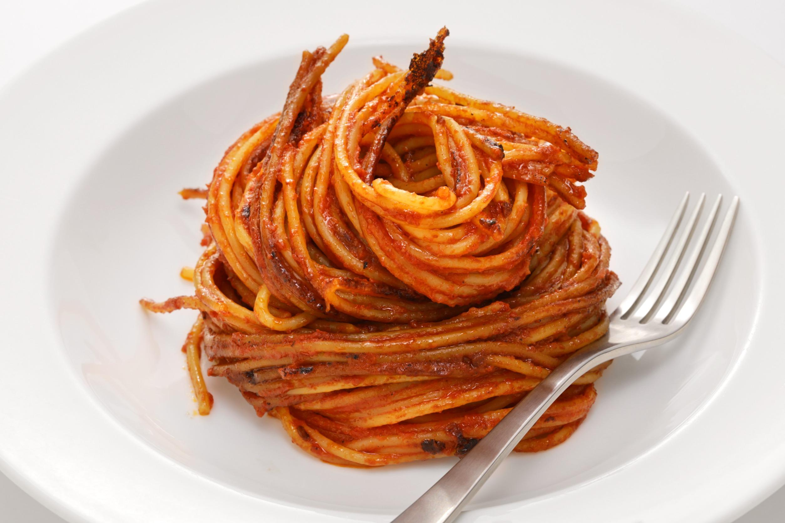

Assasin's Spaghetti

Description
A wonderful dish of slightly chared spaghetti with a
Rich, Smooth
and
Bold
flavour
Ingredients
For Broth
2 tbsp Olive Oil
3 Minced Garlic Cloves
3 cups Passata
3 cups Water
Salt to taste
For Pan
2 tbsp Olive Oil
1/4 tsp Chilli Flakes
200g Dried Spaghetti
Method
In a pot, fry minced garlic in olive oil for around a minute or until golden brown.
Then add passata, water and salt to the pot.
Once at a simmer, turn heat to low.
In a pan, heat olive oil then add chilli flakes and cook for a minute.
Then add dried spaghetti and toss through the chilli oil.
Once well tossed with tongs, pour 3 cups of broth over the spaghetti and stir every minute or so until slightly chared.
Then pour 2 more cups of broth over the spaghetti and repeat this until is as chared as you like.
Home